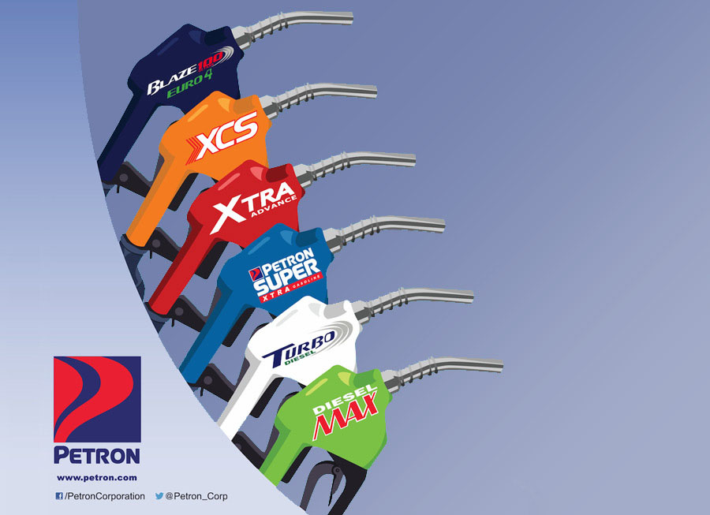
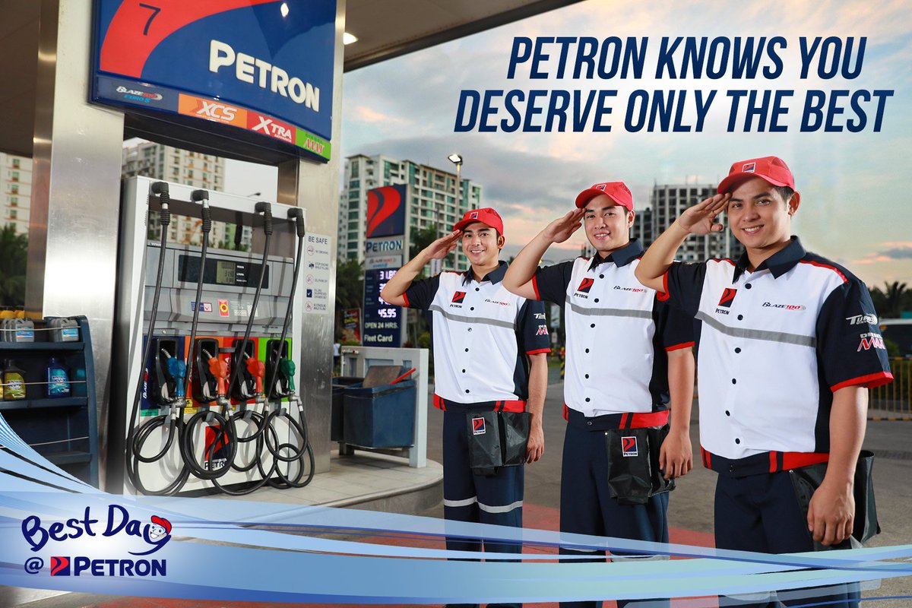
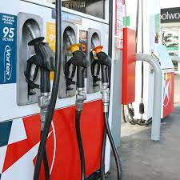
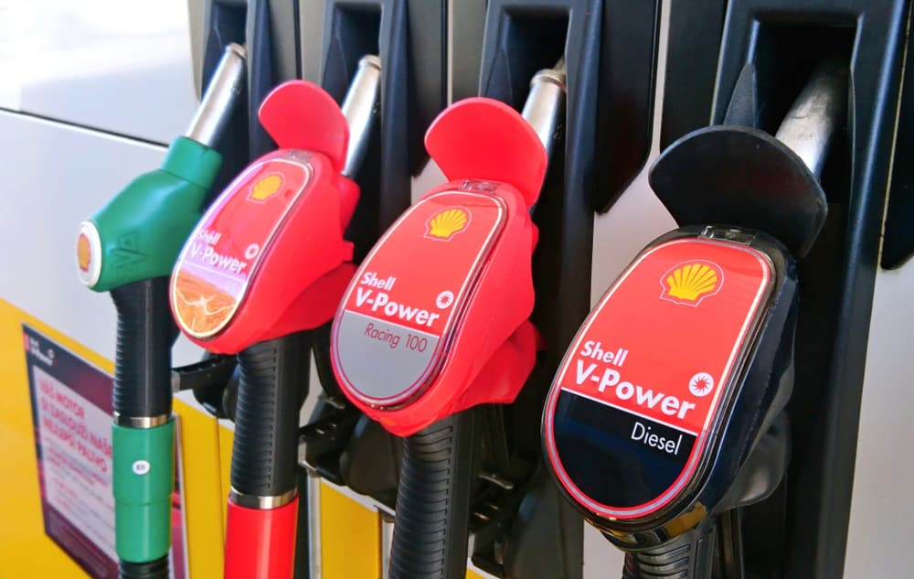

PETRON
Petron Corporation (PSE: PCOR) is the largest oil refining and marketing company in the Philippines,[4] supplying more than a third of the country's oil requirements. It operates a refinery in Limay, Bataan with a rated capacity of 180,000 barrels per day (29,000 m3/d). From the refinery, Petron moves its products mainly by sea to 32 depots and terminals throughout the country..
In 2009, San Miguel Corporation (SMC) started managing Petron. Having been in the beverage, food, and packaging industries for over 120 years, SMC is one of the biggest global conglomerates in the country today. In recent years, it has diversified into industries such as power, mining, toll ways, and airports. Under the aegis of San Miguel, Petron embarked on several strategic projects aimed at sustaining its industry leadership and more importantly, reach more Filipinos.  sustaining its industry leadership and more importantly, reach more Filipinos. Petron embarked on a massive retail network expansion program. It pioneered the micro-filling station. The program opened business opportunities for entrepreneurs while providing needed employment. This broadened Petron’s already extensive reach, especially in the provinces.
CALTEX
Caltex is a petroleum brand name of Chevron Corporation used in 29 countries in the Asia-Pacific region, the Middle East, and Southern Africa. Originally created as a joint venture between Chevron (then Standard Oil of California) and Texaco in 1936, its name was derived from both parent companies "Cal" and "Tex". The two parent companies merged in 2001 to form ChevronTexaco, later renamed simply to Chevron in 2005. As part of the merger, Caltex Corporation became a wholly owned subsidiary of the merged company known as ChevronTexaco Global Energy Inc and now Chevron Global Energy Inc.  Built on distinguished values, the Caltex brand has the power to help your business grow quickly and financially, launching your investment towards success. Increasing brand strength exponentially since 1879, Chevron has since risen to become one of the world’s most successful energy companies, with an established presence within the top 50 on the Fortune Global 500 list. As opportunities grow, make a name for yourself and drive a business with potential for strong cash flow by supplying a growing sector with the support of a trusted brand..
SHELL
Shell plc is a British multinational oil and gas company headquartered in London, England. Shell is a public limited company with a primary listing on the London Stock Exchange (LSE) and secondary listings on Euronext Amsterdam and the New York Stock Exchange. It is one of the oil and gas "supermajors" and by revenue and profits is consistently one of the largest companies in the world. We represent the downstream operations of the Shell companies in the Philippines (SciP), a network of companies involved in oil and gas exploration, importation, distribution, marketing, and other services. SciP is part of Royal Dutch Shell plc (Shell), a global group of energy and petrochemicals companies operating in over 70 countries.At Pilipinas Shell, we import, blend, transport, distribute, and market a wide range of high-quality fuels, lubricants, bitumen, and other specialty oil-based products. Our retail network continues to expand, with around 1,100 service stations catering to motorists nationwide. We also provide non-fuel retail offerings through our fast-growing network of service centers, Shell Select convenience stores, and Shell deli2go outlets nationwide. We have an integrated supply chain composed of 24 fuel terminals and supply points, 10 lubricant warehouses, two specialities facilities, and three import facilities.